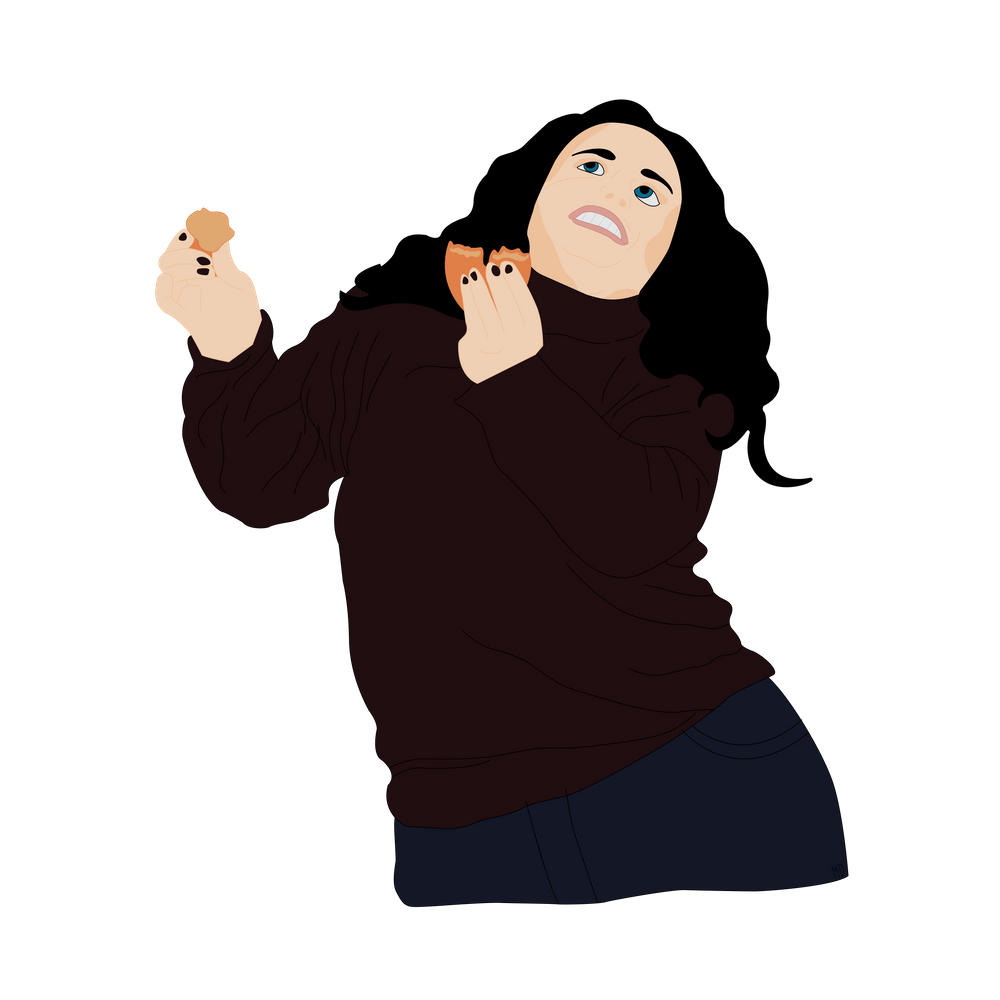

Parabéns! Agora que você entendeu qual episódio de Ação de Graças fez Monica
colocar o peru em sua cabeça vamos para mais algumas informações.
No final desse
episódio, Monica esta dançando divertidamente algo estranho na frente de Chandler para animá-lo e
consolidar um pedido de desculpas.
Mas afinal, o que Chandler descobriu que o deixou bravo com Monica ?
Dica: Lembre-se dos dias de
Ação de Graças.
A) Porque Monica deixou o Peru em cima da mesa e Joey conseguiu assustar Chandler com
isso.
B) Porque Monica queria se vingar de Chandler por ter chamado ela de baleia.
C) Porque a culpa de Chandler ter perdido o dedo do pé foi exclusivamente de
Monica.
